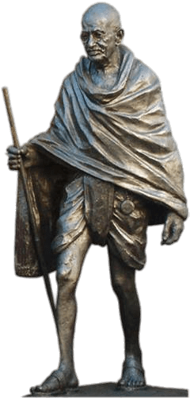

Celebrating 78th Independence Day: 10 slogans that inspired India’s freedom movement


Independence Day 2024: On August 15, 2024, India will commemorate its 78th Independence Day, a momentous occasion that marks the end and freedom from about 200 years of British colonial rule.
This year, in 2024, it will be falling on a Thursday, August 15, under the theme, ‘Viksit Bharat,’ reflecting the current government’s vision of transforming India into a developed nation by 2047, as it will coincide with 100 years of independence.
Marking the historic day in 1947, the first Prime Minister of Independent India, Jawaharlal Nehru, delivered a speech on the eve of Independence—Tryst with Destiny. In this momentous address, he proclaimed,“At the stroke of the midnight hour, when the world sleeps, India will awake to life and freedom,” capturing the struggle and happiness of the newly independent India.
As we mark India’s Independence Day, it’s important to recognise that the day was more than just a political struggle; it was a momentous movement that brought together diverse voices from across the subcontinent.
The speeches delivered by key leaders during the struggle for independence were among the most impactful elements of the freedom struggle, inspiring millions and galvanising the masses towards the common goal of independence.